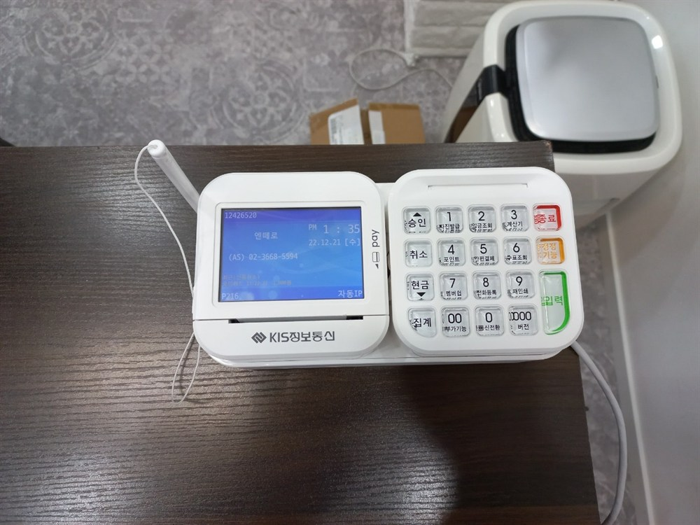
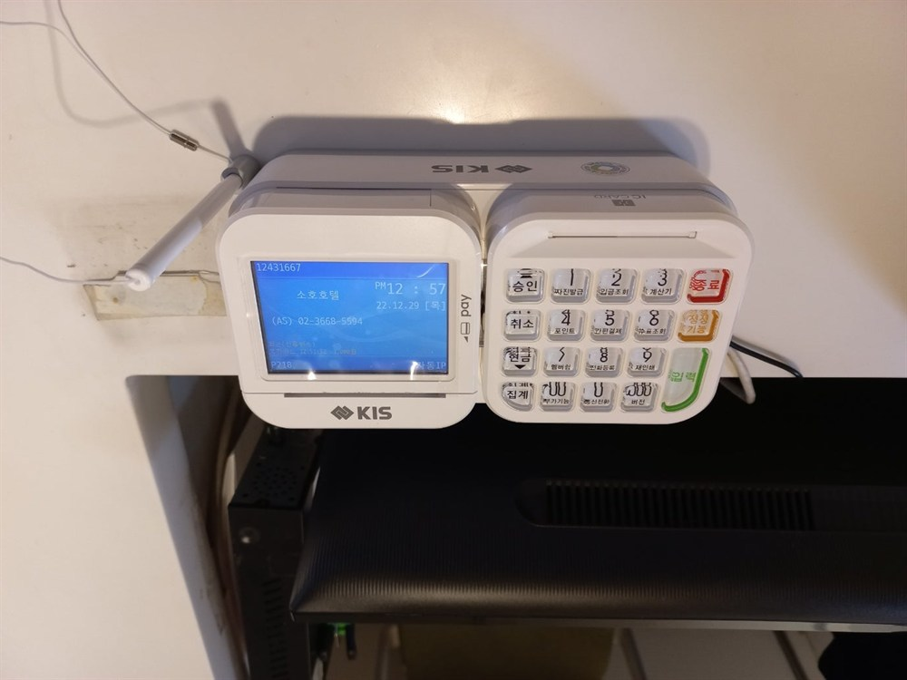

신용카드단말기 설치 위약금 주의사항 — 업종별 계약 함정 완전정리

가게를 열 때 신용카드단말기는 반드시 들이지만, 정작 계약서를 꼼꼼히 안 보고 설치했다가 나중에 위약금으로 곤란을 겪는 사장님이 많습니다. "무상으로 준다"는 말만 믿고 사인했다가, 1년 만에 이전·폐업하면서 위약금 폭탄을 맞는 경우가 대표적이죠. 이 글은 신용카드단말기 설치 위약금 주의사항을, 업종별 사례와 함께 정리한 것입니다. 설치 전에 딱 이것만 확인하셔도 손해를 크게 줄일 수 있습니다.
1. 카드단말기 위약금은 왜 생기나
카드단말기를 무상·렌탈·임대로 받으면 대부분 2~3년 약정이 함께 걸립니다. 기기값을 약정 기간에 나눠 부담하거나, 밴사(VAN)·대리점이 설치를 지원하는 대신 일정 기간 이용을 조건으로 걸기 때문입니다. 그래서 약정 기간을 채우기 전에 해지·폐업·이전을 하면, 남은 기간에 대한 위약금과 단말기 잔여 대금이 함께 청구될 수 있습니다. "공짜"처럼 보여도 사실은 약정이라는 조건이 붙어 있는 셈입니다.
2. 계약 전에 반드시 확인할 5가지
① 약정 기간 — 무약정인지, 2년인지 3년인지. 기간이 길수록 중도해지 부담이 큽니다.
② 위약금 산정식 — 남은 개월 × 월 얼마인지, 단말기 잔여 대금이 별도인지.
③ 자동연장 여부 — 약정 만료 후 자동으로 재약정되는 조항이 있는지(있으면 해지 타이밍을 놓치기 쉽습니다).
④ 단말기 반납 조건 — 해지 시 기기를 반납해야 하는지, 미반납 시 기기값이 청구되는지.
⑤ 수수료·부가비용 — 카드 수수료 외에 월 이용료·전표 매입비·통신비가 따로 붙는지.

3. 업종별로 다른 위약금 함정
업종마다 매장을 옮기거나 접는 패턴이 달라, 위약금에서 조심할 포인트도 다릅니다.
• 음식점·고깃집·분식 — 자리 이전·업종 변경이 잦습니다. 이전 시 재설치는 되지만 주소·상호 변경과 약정 승계 조건을 미리 확인하세요.
• 카페·디저트 — 창업이 몰리는 만큼 폐업률도 높습니다. 단기 폐업 시 위약금 조항을 꼭 보세요.
• 미용실·네일·피부관리 — 1인샵·공유샵이 많아 이전·양도가 잦습니다. 양수도 시 명의 이전·약정 승계가 되는지 확인.
• 병원·약국·학원 — 장기 운영이라 약정 부담은 적지만, 정기결제·수납 연동 조건과 위약금을 함께 봐야 합니다.
• 편의점·프랜차이즈 — 본사 지정 단말기·밴사가 있는 경우가 많아 개별 계약과 충돌하지 않는지 확인.
• 배달 전문·푸드트럭·야시장 — 무선·이동식 단말기를 쓰는데, 장소 이동이 많아 통신 방식 변경 시 비용이 없는지 확인.
• 무인매장·셀프계산 — 키오스크·단말기 연동 계약이 얽히니 해지 시 연동 해제 조건을 확인.
• 펜션·숙박·캠핑장 — 성수기만 운영하는 곳은 일시정지·재개가 되는지 확인하면 위약금을 아낄 수 있습니다.
4. 실제로 자주 나오는 위약금 사례
• 폐업 — 약정이 남아 있으면 폐업이라도 위약금이 나올 수 있습니다. 다만 폐업사실증명원으로 감면·면제되는 경우도 있어 조건 확인이 중요합니다.
• 이전 — 같은 사업자로 자리만 옮기면 대개 재설치로 해결되지만, 주소 변경 처리를 안 하면 문제가 생깁니다.
• 중도해지 — 더 싼 곳으로 갈아타려다 남은 약정 위약금 + 단말기값이 더 커지는 경우가 흔합니다.
• 단말기 미반납 — 해지했는데 기기를 반납 안 해 기기값이 청구되는 사례.
• 자동연장 — 약정 만료를 모르고 지나쳐 자동 재약정된 뒤 해지하려니 또 위약금이 붙는 경우.

5. 위약금 걱정 없이 설치하려면
결국 핵심은 계약 조건을 투명하게 아는 것입니다. H포스는 설치비 무료로 진행하면서, 약정 기간·위약금 산정식·자동연장·단말기 반납 조건을 설치 전에 명확히 안내합니다. 무약정으로 갈지, 약정으로 부담을 낮출지 매장 상황에 맞게 선택하도록 돕고, 폐업·이전 가능성이 큰 업종에는 그에 맞는 방식을 먼저 제안합니다. 유선·무선·이동식 카드단말기, 포스(POS) 연동, 모든 카드사 일괄 가맹까지 한 번에 처리합니다.
상담·설치 신청
사업자등록증만 있으면 됩니다. 업종·매장 상황(이전·폐업 가능성 포함)을 알려주시면, 위약금 부담이 가장 적은 방식으로 무료로 설계해 드립니다. 설치비 0원, 평균 4일 이내 전국 방문, 개인사업자·법인사업자 모두 가능합니다.
📞 신용카드단말기 설치·계약 상담 010-6832-1994